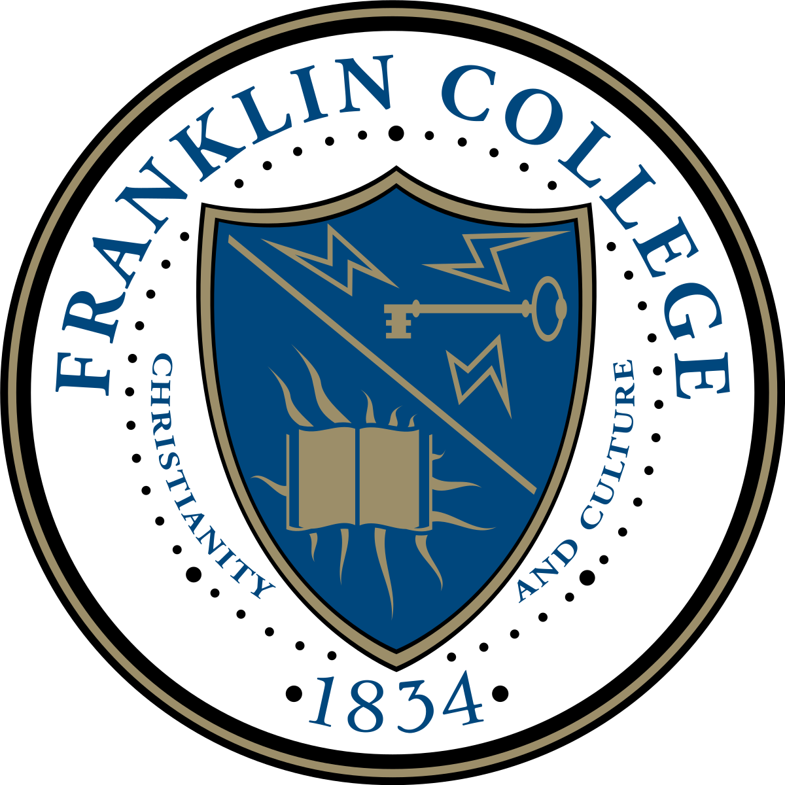

About Me
Hello! My name is Gheleb Sereke Netabai.
I am a first-generation son of parents that emigrated from Ethiopia and Eritrea, and take much pride in my cultural heritage. For my entire life, health issues have plagued me and my family: Ranging from manageable things like asthma and food allergies to paradigm health issues like scoliosis. Several of my family members, including myself, have spent a great deal of time under specialized physicians and medical care as a result. I have had ample exposure to the field and know that a career in medicine would afford me the opportunity to pay forward the kindnesses we’ve received. All I have accomplished in my life and the culmination of my character; I have done so thanks to the support of the people and systems surrounding me. Initially, I sought out to pay that kindness forward in a journey through the field of medicine.
 Firstly, I received certification by the American Red Cross in Adult & Child CPR/First Aid in order to expand my practical knowledge of the field. I was the vice president of the Franklin College neuroscience club, which existed for the purpose of propagating knowledge of neuroscience to the public. Through that organization I’ve co-ran events that involved exploring and analyzing in-depth, virtual models of the human brain and its connected systems.
I am a trained DSP working at a behavioral therapy organization called Meaningful Day Services, dedicated to individuals like my sister whom possess developmental disabilities. In addition, I’ve been employed at multiple hospitals such as Johnson Memorial and Eskenazi Health in a number of medical intern and clinical laboratory positions. For a short time I even attended medical school at the Ross University School of Medicine before I decided to take a change in my career path. Not unrelated, my portfolio even diversifies on the technical level, as I’ve programmed software in various languages for fellow colleagues conducting chemistry research studies.
That isn’t to say I’m perfect, however. A weakness I’ve recently come to terms with is that I can be somewhat of a perfectionist in my work and behavior; however, I believe that the specialized and careful work necessary of any job in the medical or software development fields requires just a little bit of perfectionism. I am not complacent with my weaknesses and as such strive every day to diminish or utilize them as strengths.